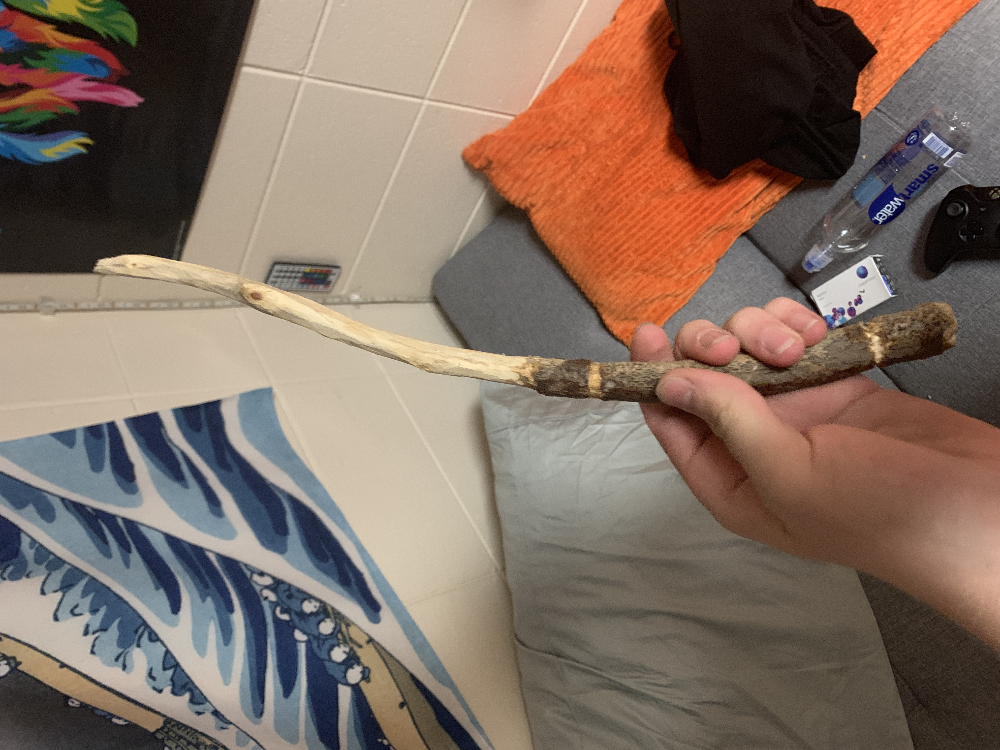

Hermione Jean Granger is a muggle-born witch, meaning she is a witch born to two parents that are not magic. Because of this, Hermione receives some backlash from studies while attending Hogwarts School of Witchcraft and Wizardry, yet she shows them she is just as good as they through her impeccable school work and superb knowledge. She is very smart, logical, and hardworking. Hermione becomes one of Harry Potter's best friends and is in Gryffindor house with him.
Hermione Granger has bushy, brown hair. Additionally, she has very large front teeth, which she magically shrinks in her fourth year for the Yule Ball. She has brown eyes, as well.
Hermione is stubborn to the core and fights for what she believes in. This is evident in her attempts to get equal rights for house elves. Hermione is unafraid to stand out and excel, even if some other students ridicule her for it. Therefore, Hermione taught me not only to be myself, but also to stand up for what I believe in. Hermione continuously voices her opinion, exemplifying the fact that her opinion is just as valuable as someone else's. Thus, Hermione really gave me confidence to be who I am.
"Fear of a name only increases fear of the thing, itself" - J.K. Rowling, Harry Potter and the Chamber of Secrets
This quote, although short, is incredibly powerful. In this, Hermione is saying that being afraid of the mere idea of something will only result in you being afraid to confront it. This is applicable to being afraid to do your own thing and be unique. If one is afraid of what others might think, they will be more afraid to actually act as they want. This quote, therefore, ultimately demonstrates how Hermione never fears to stand out, which is why I love it so much!